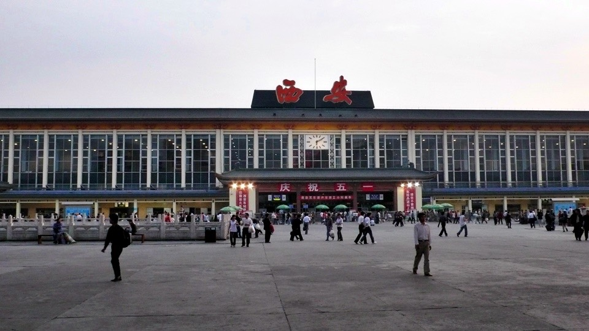
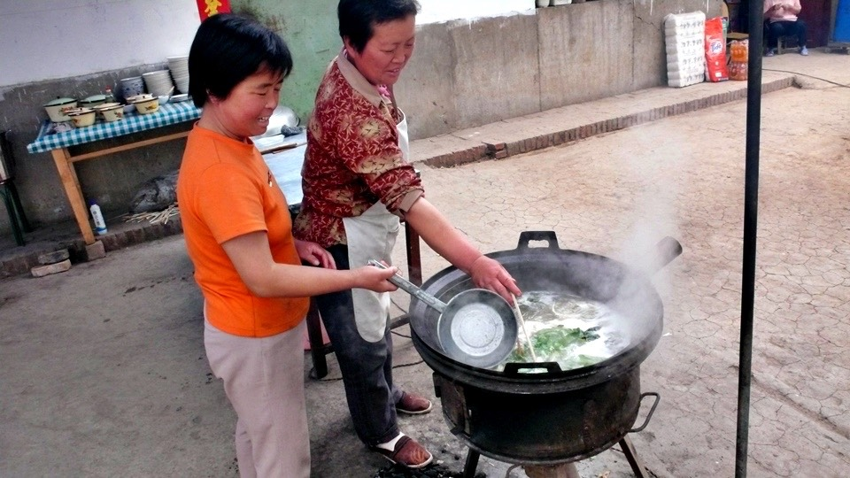
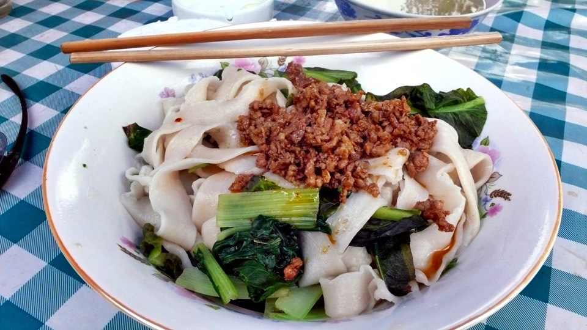
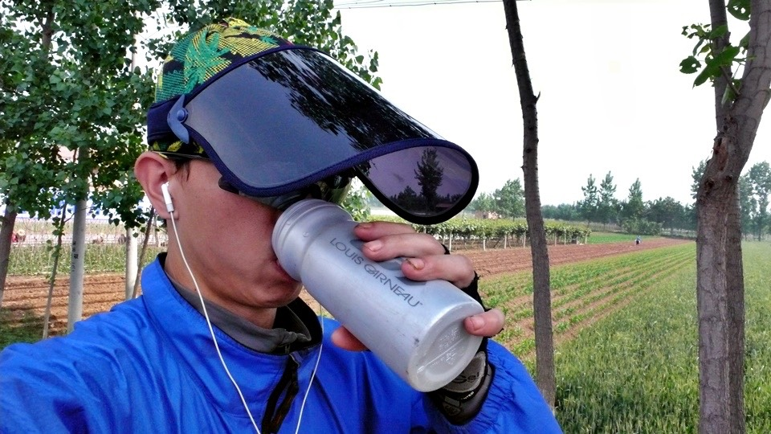
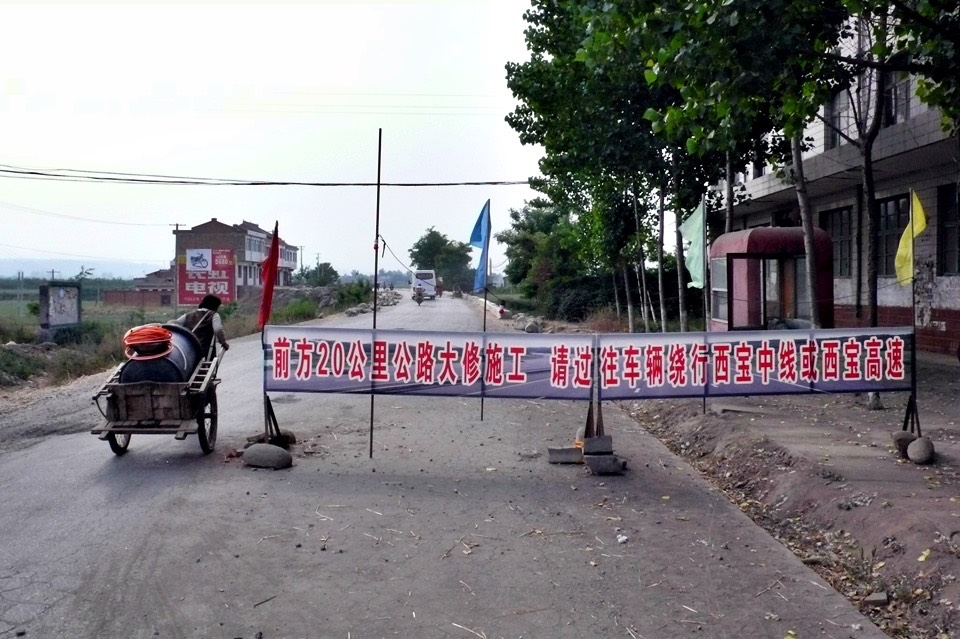
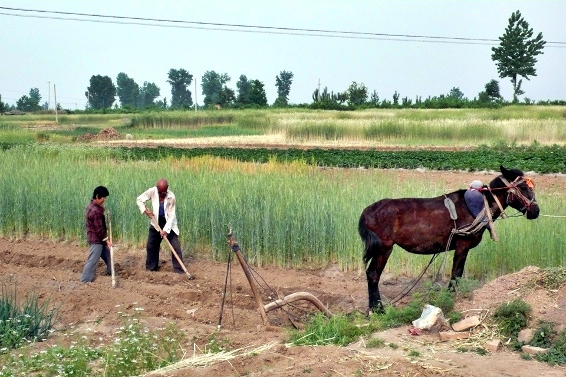
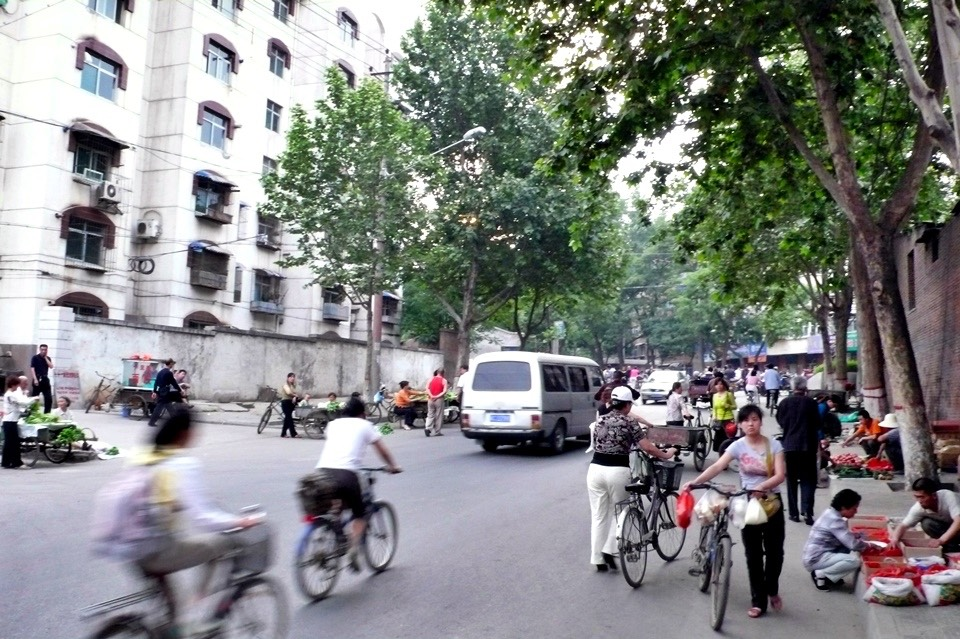

手錶的鬧鐘在五點二十分嗶嗶嗶！的響起，經過這幾天的摸索，
從起床開始，到梳洗完畢、著騎車裝、收拾行李、整裡房間、檢查小多、行李掛回小多身上，
這一連串的動作，大概要花四十分鐘，而我的理想出發時間則是早上六點整。
早餐很開心的吃昨天在回民街買的水晶餅，甜甜鹹鹹的，很好吃。
昨天買回來之後就一直克制自己偷吃的慾望，一定要等到騎車了才可以吃，讓我巴不得早點出發。
離開西安之前到火車站那裏再拍一張照片，不知道是因為太早了，還是五一黃金周已經結束，車站的人潮明顯少很多。
前兩天根本就是一片人海在那裏起伏著，我騎車都要避開那裏，以免被困住。

為了要離開西安這個大城市，往寶雞移動，要尋找310國道該怎麼接上。
一樣先騎到絲路起點的雕像那裏，想說這邊應該就是310國道，結果騎著騎著就跑到咸陽去了~_~
這樣就繞了一圈啦，又得再兜個圈子往南走，大概多走了十多公里。
今天是個非常適合騎車的天氣，沒下雨、天空有一層雲，所以太陽不大，而且居然連逆風也停了。
目標是從西安一口氣騎到寶雞去，自己看地圖發現怎麼那麼遠，這樣應該要180公里左右吧。
當初怎麼會規劃一天就要從西安騎到寶雞這麼拼呢~_~
結果騎了十二個小時，單日超過兩百公里，居然真的一天就被我騎到寶雞了。
找到住宿地方時，打開電腦看自己規劃的行程表，這才發現原來我本來是規劃兩天的時間騎這一段的Orz
還好今天騎起來很輕鬆，所以又賺到一天的時間，之後可以找個喜歡的地方多玩一天。
中午到一個叫周至縣的地方(這裡本來就是今天的目的地=..=)，在這邊的小店吃午餐。
牆上的木板上寫了很多東西，但是我點什麼就沒什麼，最後我只好問說那有什麼好吃的？
然後兩個老闆娘就聯手煮了一碗麻醬扯麵，現擀麵皮，然後真的是用扯的，拉成麵條的樣子，
跟青菜下鍋煮，再淋上應該是肉醬的東西，就完工了。

店裡連茶水都沒有，老闆娘舀了煮麵的水給我，大概是因為煮青菜的關係，所以是一碗呈現淺綠色的湯水，
她說『這裡的人都是吃麵，喝麵湯。』
入境隨俗，就跟著這麼吃吧，麵很好吃，香Q帶勁，麵湯就真的只是煮麵水的味道，當開水照樣喝下肚子。

吃完麵在這邊休息，到隔壁的雜貨店買兩根冰棒吃。
麵店的老闆娘說，之前有兩個外國人也在那個雜貨店買冰棒，還跟老闆娘合照。
我一聽，想說該不會是比我早兩個星期左右出發的其他B2P成員吧！
心中大喜，問老闆娘是什麼時候看到的？想說我應該可以追上他們的行程。
結果是二月份的事情=..=，那應該不是B2P的人，而且相隔那麼久，天知道他們騎到哪了？
這個就是我的新裝備，在西安買的五塊錢遮陽帽。
打開的話可以當帽子，蓋起來可以把整個臉都蓋住，看它是什麼飛蟲還是西曬的太陽，通通擋在外面。
戴著這個騎車的時候，因為反光的關係，所以是完全看不到我的臉的。

戴著遮陽帽騎車的時候，半路遇到一群中午出來吃飯的小學生，有一個發現我在騎車，
就大聲的跟他的同學說，『看那人！』
然後大家的眼光通通移到我身上，大家呆了一下之後，就開始有人用英文跟我打招呼。
『HELLO～』『HELLO～』『HELLO～』『HELLO～』『HELLO～』『HELLO～』
『HELLO～』『HELLO～』『HELLO～』『HELLO～』『HELLO～』『HELLO～』
看來被當成是阿豆仔了=..=
路邊飛舞的小蟲都是可惡的令人咬牙切齒，牠們會先想辦法停在你身上，
然後開始咬你，所以我要不停的拍拍衣服、褲子，還有頭巾跟臉這些地方。
因為就算穿了衣服，他們也有辦法穿過衣服咬到肉。
災情最慘的就是穿著緊身長褲的雙腿了，已經是不薄的褲子了，還是照樣被咬到。
常常騎車騎到一半，腿就很癢，不知道這些蟲怕不怕防蚊液，但是我也沒帶這個東西就是了。
過了周至，找了一天的310國道終於出現了，這時距離寶雞還有一百公里，
所以我上午騎一百，休息一下，下午再騎一百。
因為今天要長騎，所以犒賞自己一瓶汽水。
半路上在雜貨店翻冰箱找汽水的時候，順利找到可樂，老闆說一瓶要三塊。
我就說大家不是都賣兩塊五嗎？為什麼這邊要賣三塊？
那我要買兩塊五的，有什麼是兩塊五的呢？說完就繼續翻冰箱。
這時候老闆的兒子出來，看到我在找兩塊五的飲料。只說了一句話
『那可口可樂就是兩塊五的呀。』
然後那個開價三塊的老闆，瞬間裝忙就跑離開了，你沒想到會有被自己兒子吐槽的一天吧？
付過錢拿回正確價格的可樂，想框我，門都沒有。
310國道大致還算好走，路都是平的，沒有上下坡，但是修路修得很誇張。
一修就是20公里，然後預計時間是半年那麼長，但是邊修，路還是開放給車輛走。
所以相當的混亂，到處都挖的坑坑洞洞的，騎車晃神一下就會掉到兩公尺深的洞裡面去。
說是在修路，倒不如說是沿著20公里長的路。不知道在偷偷埋什麼比較適當。

路稍微好走一點的時候，就可以欣賞一下兩旁的田園風光。
種了好多的小麥呀，也有部分是種菜的，或是種了一些果樹。
然後羊咩咩、雞就到處跑，大羊吃草、小羊吃奶，咕咕雞在翻土，真是個悠閒的農村生活。

不能看的太入迷，不然真的會掉到洞裡面去，陷入萬劫不復。
就這樣一直騎，平安又順利的推進里程，下午六點半的時候就突破了兩百公里，進入寶雞市。
旅館、賓館、招待所一大堆，問到便宜的價錢，別太開心，
房間也要先記得先看過，乾淨整潔的再住，別老是為了便宜而委屈自己。

還有老闆報價的時候，我都會注意他的眼神跟口氣。
有一些眼神游移的太明顯，報價又不乾不脆的，那個擺明了就是看你外地來，正在甸甸你有幾兩重，然後要坑你。
今天找到一間看起來是新婚和善夫妻開的旅社，一晚上20元。
現在如果要登記，跟我拿身分證的時候，都已經不再是個困擾了。
『我長途旅行，身分證沒帶在身上，怕給掉了，不然我自己給你寫寫吧。』
然後就唬爛自己是住在北京市朝陽路30號，名字我則是寫真名，身分證號碼應該有25位數左右，
鬼才背的起來自己的身分證號碼是多少，所以就說沒背就好了，就這樣輕鬆應付掉。
晚上問那個太太，這邊哪裡有好吃的哨子麵。
朋友說，到了寶雞就一定要吃歧山哨子麵，因為明天就要離開寶雞了，所以晚餐一定要記得吃這個。
在鬧街裡找到一間老字號的麵店，裡面好多客人，想必是好口碑。
點了一碗哨子麵，還有炒個麻婆豆腐。
在上桌之前，看到店裡牆上有掛哨子麵的介紹看板。
原來哨子麵又稱為臊子麵，相傳是在三千多年前，由周文王的媽媽發明的。
特色有九個字『薄、筋、光、煎、稀、汪、酸、辣、香』。
然後我的哨子麵就送上桌了，是很細很細的白麵條，吃起來很嫩但又不爛。
湯底則是酸酸辣辣的，是清湯，不是勾芡的，裡面放了很多切的細細的青菜，這個麵很不錯吃。
麻婆豆腐則又是放了一堆的辣油，吃沒兩口舌頭又開始麻麻的~_~
但是很好吃就是了，很想拿一碗白飯來配著吃，可是吃完麵就很撐了。
回去之前在雜貨店買了兩包明天可以當早餐的巧克力牛奶，還有一包甜的餅乾，
外加一瓶雪碧。舒緩一下我麻到沒知覺的舌頭。
今天是個很平淡的一天，但是順順利利的，天天都是這樣的騎車好天氣就好了 *^^*
繼續閱讀：5.9 凡事都有第一次
中國-人民幣－ 1：4.3 台幣
5.8
總計：44.5元
午餐麻醬扯麵3.5元、鳳梨串1元、冰棒四隻2元、可樂2.5元、晚餐歧山哨子麵、麻婆豆腐8.5元、雪碧3元、巧克力牛奶兩包2元、小餅乾2元、住店20元